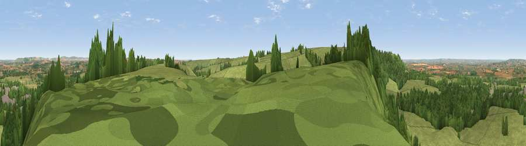

Viewpoint near Erlestoke
#13924 in England · top 19% of its area beats it · near ErlestokeThe view, rendered

A 360° render of this exact spot computed from the terrain model, tree cover and land cover — summer colours, afternoon light, calibrated against photographs of famous viewpoints. Real trees, hedges and buildings will differ in detail.
The panorama
Grey silhouette: terrain skyline in each direction (720 bearings, Earth curvature and refraction included). Dashed green: skyline with trees (+15 m) and buildings (+8 m) as obstacles. Blue strip: how far the ground is visible on each bearing.
Where the view opens
Wedge length = distance to the farthest visible ground on that bearing (vegetation-aware). Rings at 10, 25 and 50 km.
What fills the view
68% grassland · 23% woodland · 7% cropland · 2% built-up
Angular shares of the visible panorama (visual magnitude), not map area. Landscape diversity 0.38 (0–1 Shannon).
Key numbers
More beautiful places nearby
The staircase of upgrades: each row has a higher view potential than everything closer. Driving times are estimates from straight-line distance, calibrated against real road routing — check an actual route before setting out.
| Place | Direction | Drive | Score |
|---|---|---|---|
| Viewpoint near Erlestoke | WSW · 1 km | ~3 min | 60.3 |
| Stoke Hill | WSW · 1 km | ~4 min | 60.9 |
| Viewpoint near Edington | WSW · 3 km | ~7 min | 65.4 |
| Viewpoint near Edington | W · 4 km | ~10 min | 71.9 |
| Viewpoint near Bratton | WSW · 7 km | ~15 min | 73.2 |
| King's Play Hill | NNE · 14 km | ~25 min | 73.9 |
| Morgan's Hill | NNE · 15 km | ~27 min | 74.3 |
| Cley Hill | WSW · 15 km | ~27 min | 76.8 |
51.27681, -2.04475 · source: screening · position refined by local search. Computed location — check access rights before visiting.